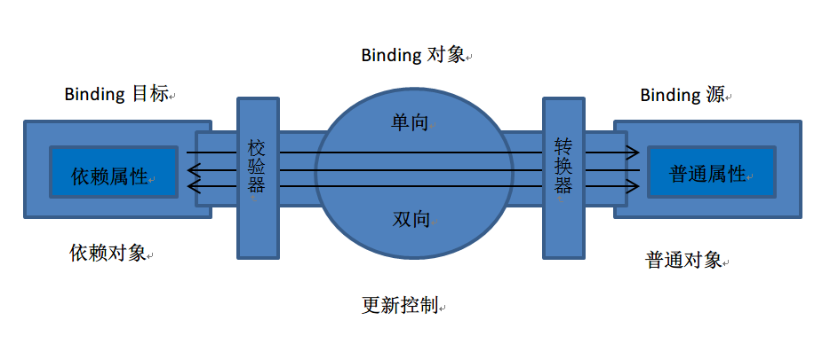
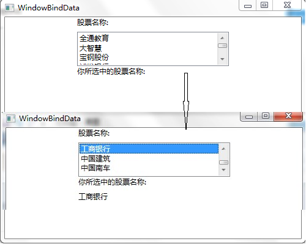

WPF入门教程系列十五——WPF中的数据绑定(一)
使用Windows Presentation Foundation (WPF) 可以很方便的设计出强大的用户界面，同时 WPF提供了数据绑定功能。WPF的数据绑定跟Winform与ASP.NET中的数据绑定功能类似，但也有所不同，在 WPF中以通过后台代码绑定、前台XAML中进行绑定，或者两者组合的方式进行数据绑定。您可以绑定控件、公共属性、XML 或对象，WPF中的数据绑定跟WinForm与ASP.NET相比，更加快捷、灵活和简单。
一、什么是数据绑定
WPF 中的数据绑定，必须要有绑定目标和要绑定的数据源。绑定目标可以是继承自 DependencyProperty的任何可访问的属性或控件，例如 TextBox 控件的 Text 属性。数据源可以是其他控件的属性，可以是对象实例、XAML 元素、ADO.NET Dataset、XML数据。微软针对XML绑定与对象绑定，提供了两个辅助类XmlDataProvider 和 ObjectDataProvider。
WPF的数据绑定跟ASP.NET与WinForm中的数据绑定有什么不同呢？ 最大不同就是WPF使用{Binding …}这一语句。
Binding是用来实现界面控件的属性与后台数据之间的绑定，通过这种形式将前台界面与后台数据联系在一起达到界面与数据耦合的目的。
WPF绑定引擎从 Binding 对象获取有关以下内容的信息：
源对象和目标对象。
数据流的方向。你可以通过设置 Binding.Mode 属性来指定该方向。
值转换器（如果存在）。你可通过将 Converter 属性设置为用来实现 IValueConverter 的类的一个实例，指定值转换器。
WPF与ASP.NET与WinForm中的绑定方式比较，存在着如下几点差异：
（1）Binding可以通过XAML语句实现界面与数据的耦合。如果把Binding比作数据的桥梁，那么它的两端分别是Binding的源和目标。数据从哪里来哪里就是源，Binding是架在中间的桥梁，Binding目标是数据要往哪儿去。一般情况下，Binding源是逻辑层的对象，Binding目标是UI层的控件对象，这样，数据就会源源不断 通过Binding送达UI层，被UI层展现，也就完成了数据驱动UI的过程。如下图。

（2）Binding有一个重要的属性Mode，实现绑定中的数据流向。具体有如下几种。
|
成员名称 |
说明 |
|
Default |
使用绑定目标的默认 Mode 值。 每个依赖项属性的默认值都不同。 一般情况下，用户可编辑控件属性（例如文本框和复选框的属性）默认为双向绑定，而多数其他属性默认为单向绑定。 确定依赖项属性绑定在默认情况下是单向还是双向的编程方法是：使用 GetMetadata 获取属性的属性元数据，然后检查 BindsTwoWayByDefault 属性的布尔值。 |
|
OneTime |
当应用程序启动或数据上下文更改时，更新绑定目标。 此绑定类型适用于以下情况：使用当前状态的快照适合使用的或数据状态实际为静态的数据。 如果要从源属性初始化具有某个值的目标属性，并且事先不知道数据上下文，则也可以使用此绑定类型。 此绑定类型实质上是 OneWay 绑定的简化形式，在源值不更改的情况下可以提供更好的性能。 |
|
OneWay |
当绑定源（源）更改时，更新绑定目标（目标）属性。 此绑定类型适用于绑定的控件为隐式只读控件的情况。 例如，可以绑定到如股市代号之类的源。 或者，可能目标属性没有用于进行更改（例如表的数据绑定背景色）的控件接口。 如果无需监视目标属性的更改，则使用 OneWay 绑定模式可避免 TwoWay 绑定模式的系统开销。 |
|
OneWayToSource |
当目标属性更改时更新源属性。 |
|
TwoWay |
导致对源属性或目标属性的更改可自动更新对方。 此绑定类型适用于可编辑窗体或其他完全交互式 UI 方案。 |
（3）可通过配置触发器，决定用户在界面输入的数据在什么时候去修改数据源中的值。可以通过UpdateSourceTrigger属性实现，具体有如下几种值
|
成员名称 |
说明 |
|
Default |
绑定目标属性的默认 UpdateSourceTrigger 值。 大多数依赖项属性的默认值都为 PropertyChanged，而Text 属性的默认值为 LostFocus。 确定依赖项属性的默认 UpdateSourceTrigger 值的编程方法是使用 GetMetadata 来获取属性的属性元数据，然后检查 DefaultUpdateSourceTrigger 属性的值。 |
|
Explicit |
仅在调用 UpdateSource 方法时更新绑定源。 |
|
LostFocus |
当绑定目标元素失去焦点时，更新绑定源。 |
|
PropertyChanged |
当绑定目标属性更改时，立即更新绑定源。 |
|
|
|
具体用法如下：
<TextBox Name="itemNameTextBox"
Text="{Binding Path=ItemName, UpdateSourceTrigger=Explicit}" />
二、简单的绑定
接下来是本文的第一个示例，一个非常简单的绑定示例，该示例演示如何通过绑定的方式把ListBox中选中的值显示到 TextBlock中。
首先，给ListBox添加了七个 ListBoxItem，做为ListBox的选项 。
其次，把第二个 TextBlock 的 Text通过 Binding 与 ListBox 选择项进行绑定。Binding 语法中的 ElementName 属性指示 TextBlock 的 Text 属性要与其绑定的控件的名称。Path 属性指示我们将绑定到Text属性上ListBox元素的属性。具体代码如下。
_files/copycode.gif)
<Window x:Class="WpfApp1.WindowBindData"
xmlns="http://schemas.microsoft.com/winfx/2006/xaml/presentation"
xmlns:x="http://schemas.microsoft.com/winfx/2006/xaml"
Title="WindowBindData" Height="400" Width="500">
<Grid>
<Grid.RowDefinitions>
<RowDefinition Height="150"/>
<RowDefinition Height="150"/>
<RowDefinition Height="138*"/>
</Grid.RowDefinitions>
<StackPanel Grid.Row="0">
<TextBlock Width="248" Height="24" Text="股票名称:"
TextWrapping="Wrap"/>
<ListBox x:Name="listStockName" Width="248" Height="56">
<ListBoxItem Content="全通教育"/>
<ListBoxItem Content="大智慧"/>
<ListBoxItem Content="宝钢股份"/>
<ListBoxItem Content="浦发银行"/>
<ListBoxItem Content="工商银行"/>
<ListBoxItem Content="中国建筑"/>
<ListBoxItem Content="中国南车"/>
</ListBox>
<TextBlock Width="248" Height="24" Text="你所选中的股票名称:" />
<TextBlock Width="248" Height="24" Text="{Binding ElementName=listStockName, Path=SelectedItem.Content}">
</TextBlock>
</StackPanel>
</Grid>
</Window>
效果如下图。

_files/wechat.png)
_files/sample_face.gif)
· 初识 WPF/Silverlight MVVM模式
· WPF中的数据绑定
· 数据和 WPF：使用数据绑定和 WPF 自定义数据显示
· Windows Presentation Foundation 简介
· [转载]Windows Presentation Foundation 数据绑定：第一部分
· 个人信息遭泄露提现难：赚钱类App套路多
· 深度揭秘：内部“告发者”曾阻止Uber无人车滑向致命车祸
· 微贷网第三季度净利润2.151亿元 环比略微增长
· Facebook新专利：可预测用户未来去向和位置
· 互联网公司涉腐事件8年超30起 消费品事业部成重灾区
» 更多新闻...